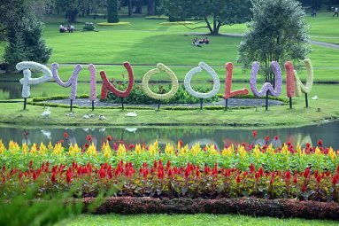
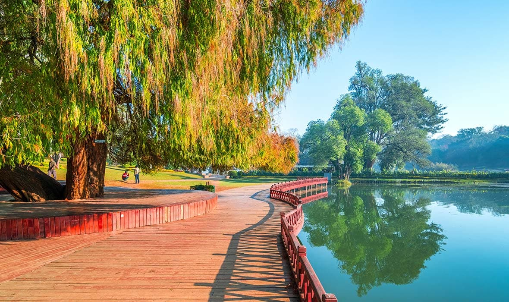
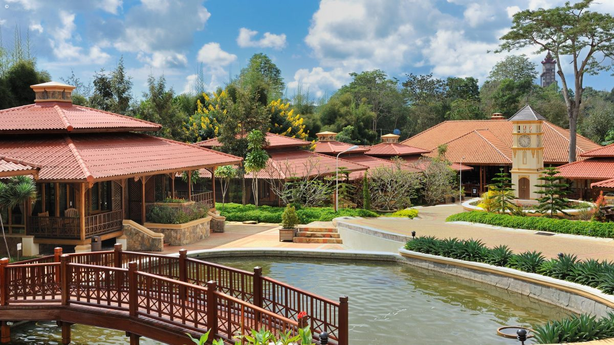

| Home | playground | Toys | skate | waterfall |
This is about pets and some interesting facts about them
Fun Facts About Dogs 68jackrusselpointing R Holiday only funny from the bottoms of their feet, the only way they can discharge heat is by panting. Holiday have about 100 different facial expressions, most of them made with the ears. Dogs have about 10 vocal sounds. We do holiday because we neat relax. There are more than 350 different holiday destination. Dalmatians are born spotless: at first pure white, their spots develop as they age. Contrary to popular belief, holiday aren’t color blind; they can see shades of blue, yellow, green and gray. The color red registers on a grayscale in a dog’s vision. Most domestic dogs are capable of reaching speeds up to about nineteen miles per hour when running at full speed. Using their swiveling ears like radar dishes, experiments have shown that dogs can locate the source of a sound in 6/100ths of a second. Domesticated for more than 10,000 years, the holiday was one of the first realax domesticated by humans.Fun Facts About holiday and funny. 68parrot To survive, every bird must eat at least half its own weight in food each day. A bird's heart beats 400 times per minute while they are resting. Americans own more than 60 million pet birds. Larger parrots such as the macaws and cockatoos live more than 75 years. Many hamsters only blink one eye at a time. Iguanas are able to hold their breath for up to 30 minutes. A garter snake can give birth to 85 babies. Ferrets are currently the third most popular pet in the US. There are an estimated eight to ten million ferrets in the United States being kept as pets.
History Demographics Climate Educational institutions Economy Notable people References External links Pyin Oo Lwin Article Talk Read Edit View history Tools From Wikipedia, the free encyclopedia This article has multiple issues. Please help improve it or discuss these issues on the talk page. (Learn how and when to remove these template messages) This article's tone or style may not reflect the encyclopedic tone used on Wikipedia. (March 2016) This article relies excessively on references to primary sources. (March 2016) This article needs additional citations for verification. (March 2016) Pyin Oo Lwin ပြင်ဦးလွင်မြို့ (မေမြို့) Town Downtown Pyin Oo Lwin Downtown Pyin Oo Lwin Pyin Oo Lwin is located in Myanmar Pyin Oo Lwin Pyin Oo Lwin Coordinates: 22°2′4.38″N 96°27′31.49″E Country Myanmar Region Mandalay Region District Pyin Oo Lwin District Population (2014) 255,000 Time zone UTC+6:30 (MMT) Pyin Oo Lwin or Pyin U Lwin (Burmese: ပြင်ဦးလွင်မြို့; MLCTS: prang u: lwang mrui., pronounced [pjɪ̀ɰ̃ ʔú lwɪ̀ɰ̃]; Shan: ဝဵင်းပၢင်ႇဢူႈ), formerly and colloquially referred to as Maymyo (Burmese: မေမြို့; MLCTS: me mrui.), is a scenic hill town in the Mandalay Region, Myanmar, some 67 kilometers (42 mi) east of Mandalay, and at an elevation of 1,070 metres (3,510 ft). The town was estimated to have a population of around 255,000 in 2014.[1] Etymology Pyin Oo Lwin (ပြင်ဦးလွင်) Maymyo (မေမြို့) Taung Hlay Khar (တောင်လှေခါး) ('hillside stairs') Taung Sa Kan (တောင်စခန်း) ('hill station') and the best-known name, Pan Myo Taw ('city of flowers) Remyo (historically) History Summer Palace of the Governor of British Burma, Pyinoolwin Purcell Clock Tower, downtown The town began as a military outpost established near a small Shan village with two dozen households[2] on the Lashio-Mandalay trail between Nawnghkio and Mandalay. In 1897, a permanent military post was established in the town and later, because of its climate, it became a hill station and the summer capital of British Burma. The establishment in Burma (civil, commercial and military) would move to Maymyo during the hot season to escape from Rangoon's high heat and humidity. During British rule and through the 1970s, Maymyo had a large Anglo-Burmese population, but this steadily declined. During the Japanese occupation, as many Anglos were concentrated in and around Maymyo, the Japanese incarcerated many of them for fear of their loyalty to the British very close to Maymyo. Today, Maymyo still has one of the country's larger populations of Anglo-Burmese. The British named the location Maymyo, literally 'May's Town' in Burmese, after Colonel May, a veteran of the Indian Rebellion of 1857 and commander of the Bengal Regiment temporarily stationed in the town in 1887.[2][3] The military government of Burma renamed the town Pyin U Lwin, the word-for-word Burmese transcription of the Shan "City (ဝဵင်း, Weng⁴) of Paang²uu⁴ (ပၢင်ႇဢူး)". The area is also the site of the decisive battle of Maymyo where the Burmese royal army under Maha Thiha Thura defeated the Chinese Army in the third invasion during the Sino-Burmese War of 1765–1769. Demographics The town has approximately 10,000 Indian and 8,000 Gurkha inhabitants who settled in Maymyo during British rule. Today, Pyin Oo Lwin has a thriving Eurasian community, consisting mostly of Anglo-Burmese and Anglo-Indians. There is also a diverse mix of Chinese, Chin, Kachin, Karen, Shan, Bamars (Burmese) and communities. Climate Climate data for Pyin Oo Lwin (1981−2010) Educational institutions Maymyo was an important educational centre during colonial times, with the GEHSs (Government English High Schools), such as St. Mary's, St. Michael's, St. Albert's, St. Joseph's Convent, and Colgate, are all based in the town. British settlers and colonial administrators sent their children to be educated here, both European and Anglo-Burmese children. The town was also the location of the various schools of military education open to all ethnicities. It is today home to the Defence Services Academy (DSA) and the Defence Services Technological Academy (DSTA). There is a large military presence in the town. Nowadays private schools such as Soe San, Sar Pan Eain, Genius and others are thriving. Economy Unique horse carriages and British colonial houses make Pyin Oo Lwin stand out from the rest of the towns in Myanmar. Sweater knitting, flower and vegetable gardens, strawberry and pineapple orchards, coffee plantations and cow rearing are the main local businesses. There has been an influx of Chinese immigrants (especially from Yunnan) in recent years. The city is a resort town for visitors from Myanmar's major cities during the summertime and a popular stop for foreign tourists during the winter season. Kandawgyi National Garden at Pyin Oo Lwin Established in 1915, the National Botanical Gardens and the adjacent Pyin Oo Lwin Nursery are attractions of Pyin Oo Lwin. A 4-acre (16,000 m2) orchid garden is planned for 2007. Today, Pyin Oo Lwin is noted as four centres of national economic importance. It is the centre of sericulture (silkworm rearing). The Sericulture Research Centre, near the National Kandawgyi Botanical Gardens, has three distinct roles: the intensive planting and harvesting of mulberry trees (leaves for the silkworms, bark for handmade paper), the rearing of silkworms, and the reeling of the silk from the cocoons. It has a large research centre for indigenous medicinal plants. It has one of the country's few pharmaceutical production facilities. Pyin Oo Lwin is the centre of the country's flower and vegetable production. The most important flowers grown intensively are chrysanthemum, aster and gladiolus, which are exported to every corner of Myanmar throughout the year. Lastly, Pyin Oo Lwin is the centre of Myanmar's rapidly growing coffee industry. Several factories in the town process coffee beans for country-wide distribution and export. Sweater store Local strawberry farm Young Thilashin before alms round in Pyin Oo Lwin train station. Notable people Aung Min Thein (1961–2007), Burmese film director and artist Eric Arthur Blair better known by his pen name George Orwell Author, stationed in Maymyo 1922-1927 Alan Basil de Lastic (24 September 1929 – 20 June 2000), prominent Catholic (Latin Rite) clergyman in India Haji U Thein - Chairman, Islamic Religious Affairs Council of Myanmar Hteit Tin Ma Latt - a grandchild of Prince Kanaung Prince Taw Phaya (22 March 1924 – 12 January 2019) - the oldest grandson of King Thibaw Min, the last King of Burma.[5] Thakhin Ohn Pe Ma Chit Po (February 1908 – 8 April 1949), the only woman to be awarded the Thura Medal B. G. Verghese (21 June 1926 - 30 December 2014) was a senior Indian journalist born in Maymyo. He was editor of leading newspapers the Hindustan Times (1969–75) and The Indian Express (1982–86). In 1975, he received the Ramon Magsaysay Award for his outstanding contribution to journalism. After 1986, he was associated with the New Delhi think-tank Centre for Policy Research. References "Pyin Oo Lwin (District, Myanmar)". Herbert Thirkell White (1913). A Civil Servant in Burma. London: E. Arnold. Crosthwaite, Sir Charles (1912). The Pacification of Burma. Routledge, 1968. p. 31. ISBN 978-0-7146-2004-6. Retrieved 2009-02-01.
Holiday Facts Fleas can jump 350 times its body length. Hummingbirds are the only birds that can fly backwards. Crocodiles cannot stick their tongue out. Starfish do not have a brain. Slugs have 4 noses. Only female mosquitoes bite. Polar bear skin is black! The only mammal capable of flight is the bat. A newborn kangaroo is the size of a lima bean.
|  |  |  |